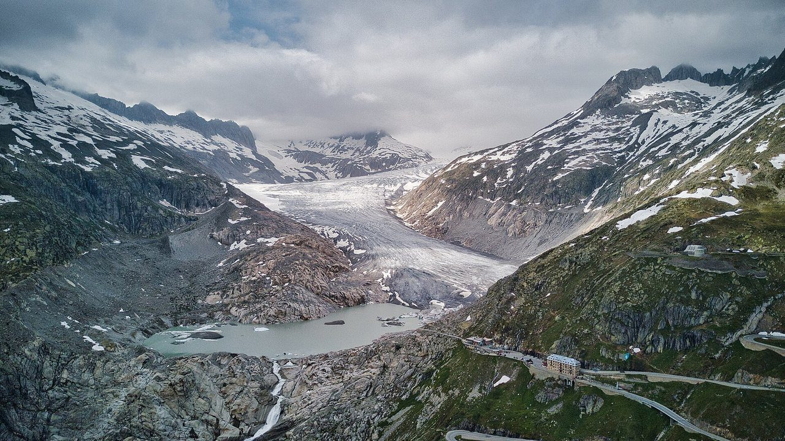

Race, Furka Pass

Behind
Best +0:01
371W
Target 418 W-47 W
- Cadence
- 87rpm
- Heart
- 140bpm
- Speed
- 26.5km/h
Recover13 of 15
2:48
Next: · 5:00 at level 22
+2.0%
563 m climbed
14.46 km
13
Resistance / 32
Solo races your best-time ghost: position reads Ahead or Behind, and solo alone gets a Pause button. Frozen at 32:12.